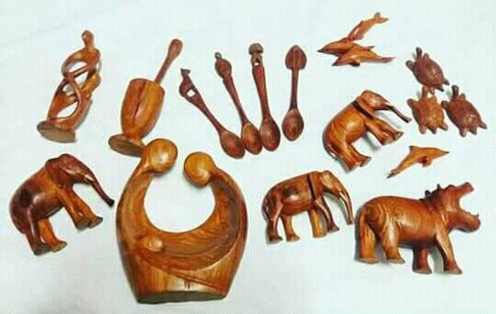

Histórias dos artesãos
Conheça alguns dos artesãos que mantêm vivas as tradições e inovam nas técnicas. Cada história destaca origem, processo criativo e como contactar o artesão.
Madu Baldé
Cestaria tradicional
"Trançar é ouvir a terra e tecer memória."
Madu aprendeu a arte da cestaria com sua mãe e avós. Usa palha e fibras locais, aplicando a técnica Xitole em peças utilitárias e decorativas. Atua também como formador em oficinas comunitárias, promovendo práticas sustentáveis e a transmissão intergeracional do saber.
- Técnicas: cesteria, trançado
- Materiais: palha, fibras locais
- Oficinas: sim — comunitárias
Aminata Djau
Tecelagem e tinturas naturais
"Cada cor vem da nossa terra; cada padrão, de uma história."
Aminata combina padrões tradicionais com experimentação em tingimentos naturais (casca, raízes e folhas). Produz tapeçarias, têxteis e peças para moda, ao mesmo tempo que lidera oficinas para jovens artesãos, reforçando o uso responsável dos recursos locais.
- Técnicas: tecelagem manual, tingimento natural
- Materiais: algodão local e fibras naturais
- Oficinas: sim — formação e mercados locais

José Camará
Escultura em madeira
"A madeira guarda ritmos antigos; eu só os deixo aflorar."
José trabalha madeira e restaura peças cerimoniais, preservando simbologias locais. Suas esculturas são utilizadas tanto em rituais quanto como peças de colecionador, conectando tradição e mercado contemporâneo.
- Técnicas: escultura, restauro
- Materiais: madeiras locais tratadas
- Oficinas: eventual participação em eventos culturais